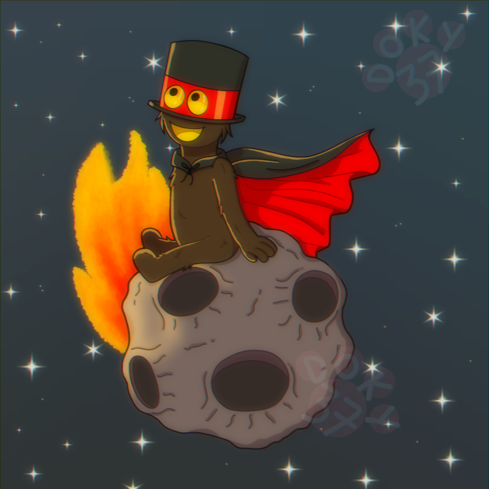

Arantxa Gabriela "Doky37" Serrano Escobedo
Artista digital mexicana especializada en ilustración. Estudia la Licenciatura en Arte y Comunicación Digitales en la Universidad Autónoma Metropolitana Unidad Lerma. Reside en Toluca, Estado de México. Su trabajo se enfoca en la creación de personajes y storytelling, con un estilo combinación entre el estilo cartoony y anime. Utiliza herramientas como softwares de ilustración y diseño, con una tableta con lápiz táctil. Su inspiración principal está en las producciones animadas (series, películas y cortos animados), de diferentes técnicas de animación (animación 2D, CGI, Stop Motion, etc.). Así como los programas de marionetas, musicales, historias de fantasía y videojuegos.
